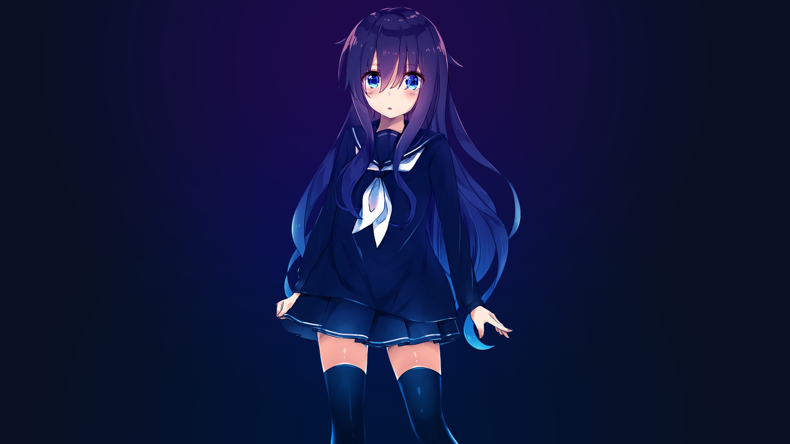

𝓓𝓪𝓻𝓴𝓣𝓸𝔁🥀#0001 (usuario de Discord) y 🅹 🅾 🆁 🅳 🅳 🆈 ENP#0001 (Usuario de Discord)son dos programadores con mucho entusiasmo y ganas de aprender cada vez más ya que les atrae el mundo de la informática, un día se les ocurrió la idea de crear un asistente virtual la cual se llama Luna(IA)

LOS CREADORES
𝓓𝓪𝓻𝓴𝓣𝓸𝔁🥀#0001 (usuario de Discord): Su verdadero nombre es Mathias fue el que tuvo la iniciativa de crear a LunaIA ya que le interesó el tema de crear un asistente inteligente (intiligencia artificial) y pues lo comenzo a hacer.
🅹 🅾 🆁 🅳 🅳 🆈 ENP#0001 (Usuario de Discord): Su verdadero nombre es Jorddy y cuando su amigo Mathias le enseño a LunaIA le intereso el tema y comenzo a participar en el proyecto de LunaIA para crearla.